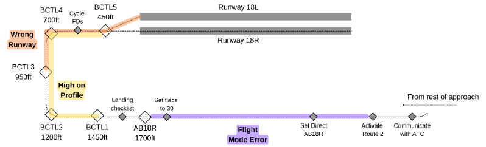
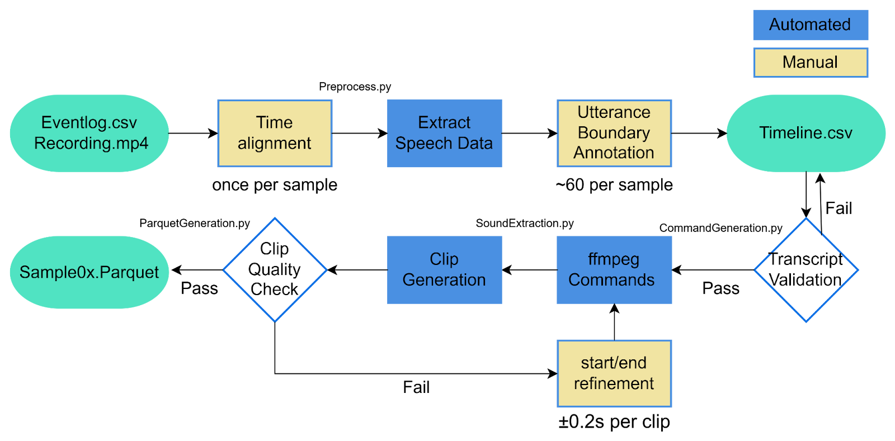
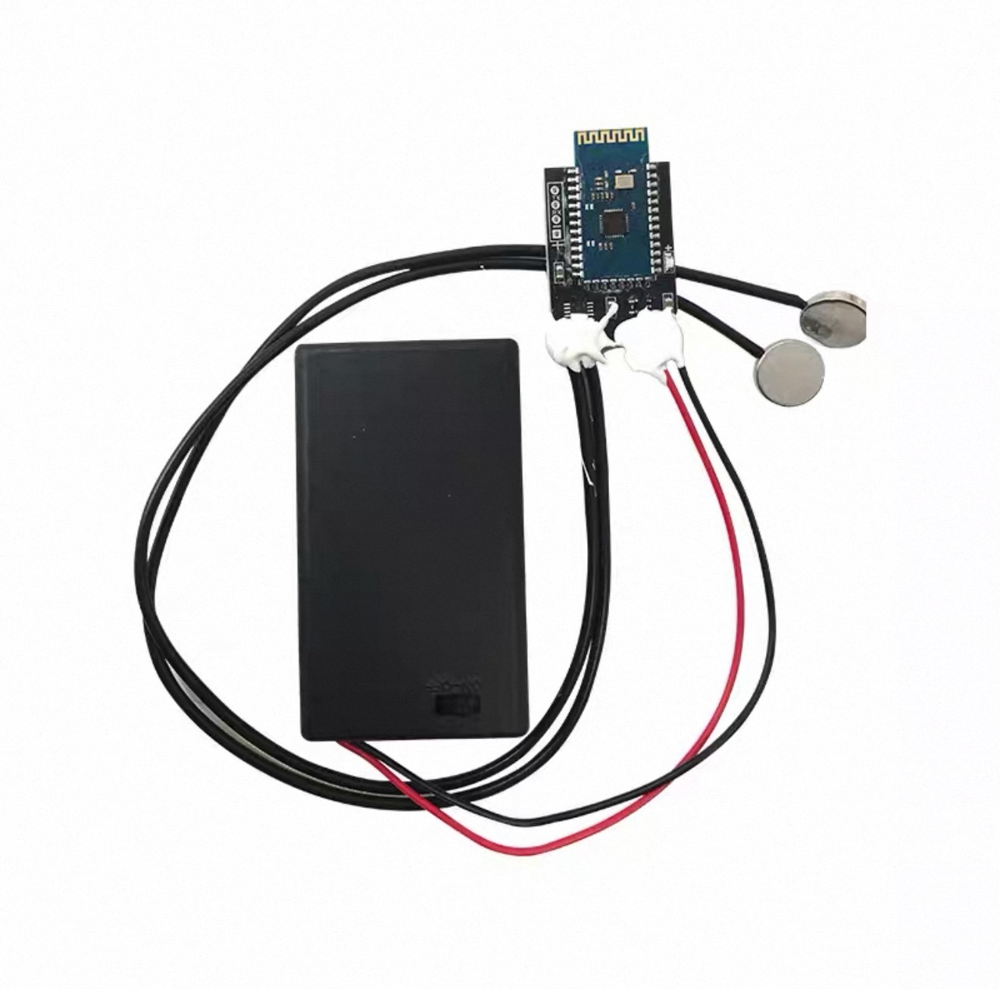
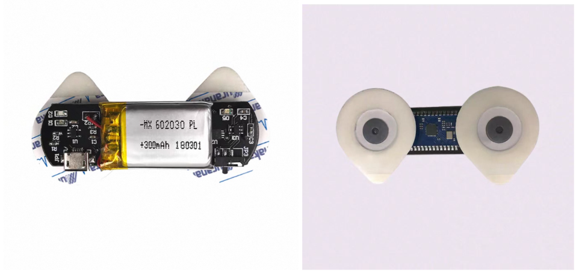
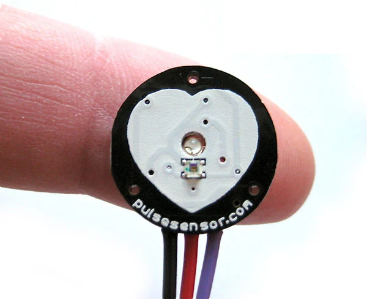
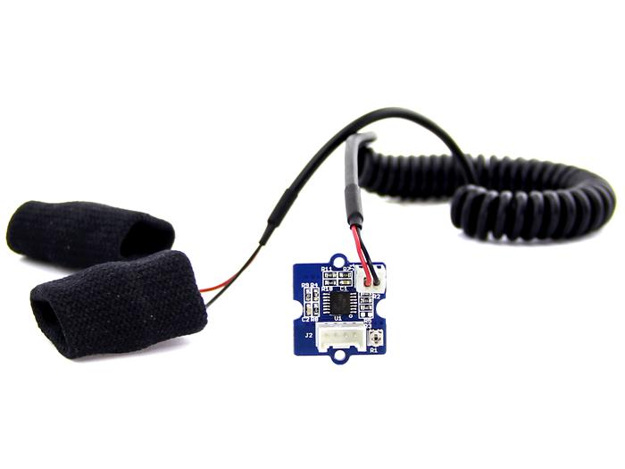
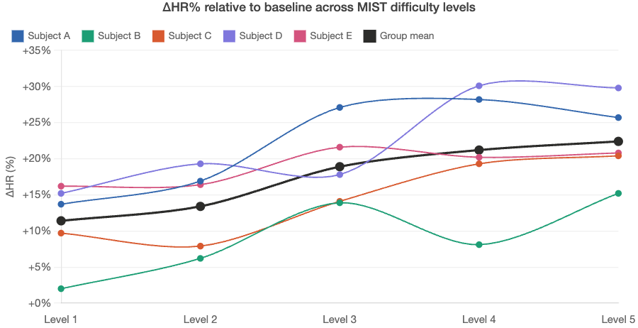
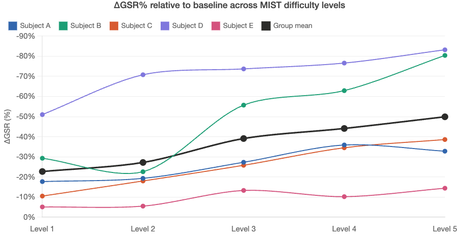
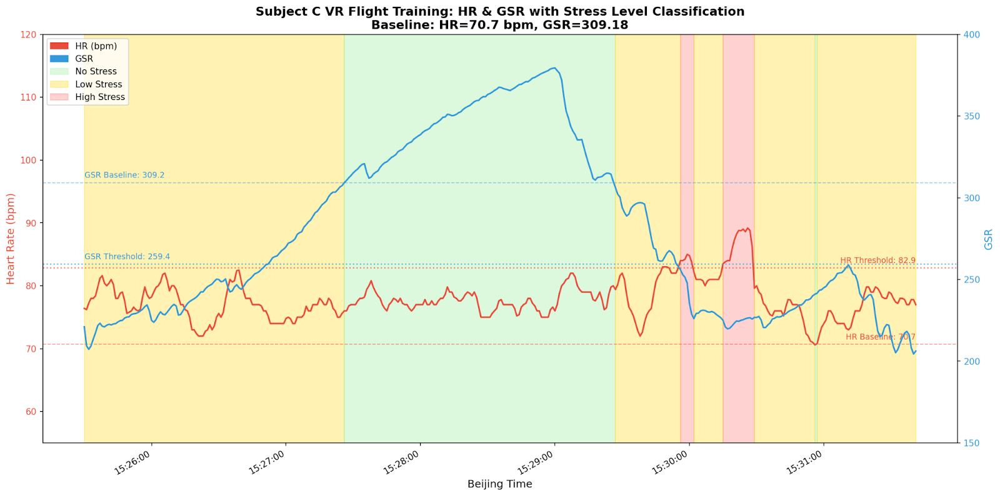

CDE4301 Final Report
Instructor:Professor Khoo Eng Tat
Team: Liu Yuhui (Ula) (A0266685L), Wang Yubo (A0262295Y), Zhang Yining (A0258906R), Gao Jiquan (A0258910B)
Affiliation: Singapore Airlines – NUS Digital Aviation Corp Lab
Semester: AY2025/26 Sem 2
Link to Github Repo: https://github.com/zhangyn0218/cde4301-project
This project developed two technical workstreams within an existing VR-based PM training simulator to support objective, data-driven assessment of Pilot Monitoring competency. The first improved speech recognition capability through Low-Rank Adaptation fine-tuning of a Faster-Whisper Large-v3 model, supplemented by prompt engineering and numerical normalisation, reducing word error rate on real pilot data from approximately 48% to 13%, with the largest gains concentrated on aviation-specific vocabulary. The second introduced physiological signal acquisition combining PPG-derived heart rate and galvanic skin response, validated through a MIST-style stress protocol (Dedovic et al., 2005) and preliminarily applied to an authentic VR training session, where detected stress episodes corresponded temporally with known PM-critical scenario events. Both pipelines were mapped to IATA Observable Behaviors (IATA, 2024; IATA, 2025), providing trainees with objective, time-aligned evidence of their communicative and cognitive performance to support structured self-reflection within the competency-based training framework.
The Pilot Monitoring (PM) role is central to multi-crew flight safety, yet it remains one of the most difficult competencies to train and assess objectively. Unlike the Pilot Flying, whose performance is measurable through flight path deviations and control inputs, the PM's effectiveness manifests through cognitive and communicative acts — scanning instruments, detecting anomalies, issuing callouts, and escalating concerns — none of which leave direct, quantifiable traces in conventional simulator data. Current assessment frameworks, including the IATA Evidence-Based Training and Competency-Based Training and Assessment standards, define PM competency through Observable Behaviors, but evaluators must rely on memory-based, real-time observation to map trainee performance onto these criteria. Research has documented that such methods produce inconsistent evaluations across instructors and sessions, undermining the reliability that competency-based frameworks are designed to achieve (Holt, 2018).
Virtual reality flight simulation offers a scalable alternative to full-flight simulators, which cost upwards of USD 20 million and face compounding constraints from global instructor shortages projected against a demand for 650,000 new pilots by 2043 (Boeing, 2025). Regulatory bodies including the FAA and EASA have begun recognising VR-based devices for pilot training (Loft Dynamics, 2024; EASA, 2025), and studies have demonstrated comparable procedural effectiveness for monitoring-oriented tasks (Cambridge University, 2025). However, VR addresses the access problem without resolving the assessment problem: objective, automated evaluation of PM competency within VR training environments remains an open challenge that this project seeks to address.
We develop two technical workstreams integrated into an existing VR-based PM training simulator using a Busan approach scenario with embedded intentional deviations. The first workstream targets the communicative dimension of PM performance, domain-adapting a Faster-Whisper Large-v3 ASR model via Low-Rank Adaptation fine-tuning on air traffic control speech data, supplemented by prompt engineering and numerical normalisation. The second workstream introduces physiological sensing as a new modality for indexing the cognitive dimension, combining PPG-derived heart rate and galvanic skin response in a dual-sensor configuration validated through a Montreal Imaging Stress Task protocol (Dedovic et al., 2005). A threshold-based stress detection algorithm adapted from Jeroh (2018) was subsequently applied to an authentic VR training session to examine whether detected stress episodes aligned with known PM-critical scenario events.
Together, the outputs of both pipelines are mapped to IATA Observable Behaviors (IATA, 2024; IATA, 2025), providing the PM trainee with objective, time-aligned evidence of their own communicative and cognitive performance. The system is designed as a self-assessment support tool rather than an evaluation instrument, enabling trainees to reflect on their performance with reference to established competency standards.
The global aviation training community has progressively shifted from traditional hour-based curricula toward competency-based approaches that emphasize demonstrated performance against defined behavioral standards. IATA has been instrumental in codifying this transition through its Evidence-Based Training (EBT) framework (IATA, 2024) and accompanying Competency Assessment guidance materials (IATA, 2025), defining nine core competency areas for pilots, each operationalized through specific Observable Behaviors (OBs).
Two competency areas are particularly relevant to this project. The communication competency encompasses OBs assessable through speech analysis: OB 2.3 specifies that pilots should convey messages clearly and accurately; OB 2.7 addresses appropriate escalation of concerns; and OB 2.9 concerns adherence to standard radiotelephone phraseology. The Workload Management competency encompasses OBs assessable through physiological proxies, enabling instructors to understand not merely that a performance lapse occurred, but why it occurred in terms of the trainee's cognitive load. Kim et al. (2023) validated that decomposing broad competency areas into specific observable indicators enables more reliable and consistent assessment across evaluators, reinforcing the theoretical foundation of this approach.
Despite the conceptual maturity of competency-based frameworks, a critical implementation gap persists: current EBT assessment relies entirely on instructor observation. Research has documented that such memory-based assessment produces inconsistent evaluations across instructors and training sessions (Holt, 2018). Our two technical workstreams address this gap by generating timestamped evidence packages that augment instructor judgment while providing the objective, reproducible data that current methods lack.
Aviation remains a difficult domain for automatic speech recognition. Air traffic and cockpit speech contain constrained phraseology, heavy use of alphanumeric identifiers, non-native accents, clipped speaking styles, and operational noise, making domain adaptation especially important. Recognition errors in aviation are not merely transcription mistakes — they may affect the recovery of runways, call signs, and procedural phrases that carry operational meaning (Wang, 2024).
A key theme in the literature is the role of aviation-specific corpora. The ATCOSIM corpus, introduced by Hofbauer et al. (2008) as approximately ten hours of non-prompted clean ATC speech with orthographic transcriptions, became an early foundational public resource for domain-specific aviation ASR, as operational speech is difficult to obtain due to privacy and institutional constraints. Later work confirmed its continued importance alongside corpora such as ATCO2, MALORCA, and ATCSpeech (Wang, 2024). For this project, ATCOSIM serves as a practical intermediate aviation domain corpus for first-stage adaptation, providing relevant exposure to aviation phraseology absent from general speech corpora.
A second major theme is domain adaptation under limited resources. Lin et al. (2021) showed that air traffic ASR can be improved by combining unsupervised pretraining with supervised transfer learning when only small amounts of transcribed data are available, supporting the view that aviation ASR should be treated as a specialized transfer learning problem. Within this setting, LoRA is especially attractive: it reduces trainable parameters by freezing the pretrained backbone and learning only low-rank update matrices, making adaptation more efficient and less prone to overfitting (Song, 2024). Recent work on LoRA-based Whisper adaptation confirms that this approach can approach or outperform full fine-tuning while requiring only a fraction of the parameters (Prasad, 2024), providing direct support for selecting LoRA as the main adaptation strategy where computational efficiency and limited data are key concerns.
Accent robustness is a further issue. A recent study found that existing ASR systems still struggle with Southeast Asian accented English in noisy ATC settings, and that region-specific datasets and accent-focused training are essential for improving performance (Wee et al., 2025). This is directly relevant as the VR pilot data include Singapore-accented English, meaning effective domain adaptation must address both phraseology and regional acoustic mismatch.
Finally, WER must be interpreted in context. Reviews of ATC ASR emphasize that misrecognizing a runway, call sign, or altitude is far more serious than misrecognizing a function word (Wang, 2024), suggesting evaluation should consider high-value vocabulary classes such as aviation terms, numbers, and alphanumeric identifiers (Pang et al., 2025). For a PM assessment system, the goal is not perfect dictation, but reliable preservation of operational meaning in safety-relevant callouts.
The case for physiological monitoring during pilot training is grounded in the documented consequences of undetected cognitive stress on flight safety. Stress impairs attention, slows reaction times, degrades situational awareness, and compromises decision-making. Lakshmana et al. (2025) corroborated this in a study of 372 commercial pilots, finding a significant negative relationship between perceived stress and decision-making quality. SKYbrary's OGHFA Behavioural Note on Stress and Stress Management identifies preparedness as the primary mitigating mechanism, positioning structured training as a means of cultivating competence-based confidence that regulates the stress response itself — and underscoring the need for objective real-time stress monitoring.
Galvanic skin response (GSR), or electrodermal activity (EDA), reflects sympathetic nervous system arousal through changes in skin conductance. Zhou et al. (2015) demonstrated that GSR readings significantly increase when cognitive load increases, establishing GSR as a reliable objective indicator of workload intensity. Heart rate variability (HRV) provides a complementary window: HRV decreases under cognitive load as the cardiovascular system shifts toward sympathetic dominance, providing mutual validation when combined with GSR across partially independent autonomic mechanisms.
The feasibility of combining these modalities in aviation was established by Harrivel et al. (2017) at NASA, demonstrating that real-time physiological monitoring can be successfully implemented in flight-relevant environments. More directly, Ouyang et al. (2023) achieved 96.67% accuracy predicting inattention by fusing ECG and GSR signals with a support vector machine, validating the complementary value of this dual-sensor approach.
The Montreal Imaging Stress Task (MIST), developed by Dedovic et al. (2005), was selected to validate our sensing setup. MIST combines mental arithmetic challenges with social-evaluative pressure through fabricated performance feedback, producing robust physiological stress responses that scale with graded difficulty — a prerequisite for distinguishing different levels of cognitive challenge during PM training.
For stress detection operationalization, Jeroh (2018) developed a threshold-based approach using HR and GSR baseline deviation, flagging stress when both modalities simultaneously exceed predetermined thresholds. This dual-condition requirement reduces false positives, since HR alone is susceptible to motion artifacts while GSR alone may fluctuate due to environmental factors.
The full potential of objective PM evaluation emerges only when multiple data modalities are combined. Xu et al. (2025) developed an in-flight multimodal system capturing gaze behavior, speech, and physiological signals simultaneously, establishing that integrating multiple data streams provides richer and more reliable evidence of pilot attention and workload than any single modality. Minas et al. (2025) further demonstrated that single-modality assessment misses important cross-modal patterns: a pilot may exhibit elevated physiological stress indicators seconds before verbally escalating an anomaly, or issue appropriate callouts while physiological data reveals minimal cognitive engagement, suggesting rote execution rather than genuine situation awareness.
A significant gap remains: no existing system combines speech recognition and physiological sensing specifically for PM evaluation in VR training environments. Prior multimodal research has focused primarily on the Pilot Flying role, where flight path deviations provide objective performance metrics. The PM role lacks such clear-cut outputs — its effectiveness manifests through cognitive processes and communicative acts rather than direct aircraft control — meaning PF-oriented approaches cannot be directly transferred.
Our project addresses this gap by developing the first proof-of-concept system integrating domain-adapted speech recognition with validated physiological stress sensing for PM competency assessment. Speech data reveals what the pilot communicates and when; physiological data reveals the cognitive states that drive those communications. Speech alone cannot explain why a trainee delayed a critical callout; physiological data can reveal whether the lapse stemmed from cognitive overload or simple procedural forgetting. Conversely, physiological data alone cannot distinguish productive engagement from unproductive stress; speech provides the behavioral outcome that gives meaning to the physiological response. By combining both modalities within the IATA Observable Behavior framework, the system generates objective, transparent evidence that augments instructor judgment, addressing the assessment gap that VR alone cannot solve.

The Busan Approach scenario is a predefined VR-based landing sequence developed by the research team to simulate terminal-phase flight operations with embedded Pilot Monitoring (PM) challenges. It incorporates three intentional deviations:
Each of them requires timely detection and verbal escalation by the PM. The scenario includes basic interactivity such as flap configuration, checklist execution, and verbal communication, while automatically correcting deviations if no intervention occurs to maintain continuity. As MCP and FMC interactions are not fully implemented, the scenario primarily evaluates monitoring and communication behaviors, and serves as the standardized test environment for collecting synchronized speech, physiological, and event data in this project.
The system consists of two parallel processing workstreams that generate evidence for Pilot Monitoring (PM) evaluation.
In the first workstream, speech audio is processed using a Faster-Whisper automatic speech recognition (ASR) model to produce callout transcripts, which are then analyzed to assess communication-related Observable Behaviors (OBs).
In the second workstream, physiological signals — specifically heart rate (HR) and galvanic skin response (GSR) — are processed to derive stress labels, which are used to evaluate workload management OBs.
In addition, simulator event logs provide task-level ground truth, including the timing of scenario deviations and the corresponding PM responses, enabling alignment and validation of the multimodal evidence.
In the baseline pipeline, Azure Speech to Text produced a word error rate of about 48 percent on the collected VR pilot data. At this error level, many utterances are only partially intelligible, and recognition errors reduce the reliability of speech as an input modality for both scenario interaction and behavioural assessment.
This limitation affects the VR scenario at the interaction level. Because aviation-specific terms and procedural phrases are not recognized consistently, the system cannot depend fully on phrase-level verification and must instead rely partly on simplified keyword-based triggering. While this keeps the scenario functional, it reduces semantic precision and weakens the system's ability to verify whether the trainee actually produced the intended operational callout. As a result, speech-driven interaction becomes less specific and more vulnerable to false acceptance, since generic trigger words may be detected even when the operationally important content is missing or incorrectly recognized.
The issue is also important from the perspective of behavioural assessment. Within the IATA pilot competency framework, communication includes observable behaviours such as conveying messages clearly, accurately, and concisely (OB 2.3), and using appropriate escalation in communication to resolve identified deviations (OB 2.7). In pilot monitoring scenarios, these behaviours are often expressed through verbal callouts, confirmations, and escalations. However, when the transcription modality itself is highly error-prone, it becomes difficult to determine whether an incorrect transcript reflects poor pilot communication or ASR failure. This weakens the validity of transcript-based evidence for pilot monitoring assessment, especially when errors occur on operationally important aviation terms that carry much of the behavioural meaning.
Therefore, this workstream aimed to develop a domain-adapted ASR pipeline that could substantially reduce transcription error on real pilot data while better preserving operational meaning in pilot monitoring-related utterances. A target of reducing WER to below 20 percent was adopted as a practical engineering objective. More broadly, the goal was to establish a transcription pipeline that is accurate, reproducible, deployable offline, and sufficiently robust for behavioural verification in the VR training environment.
We tried four potential approaches for improving speech recognition performance under domain-specific conditions, with considerations on offline capability, data availability, and implementation complexity.
Low-Rank Adaptation (LoRA) is a parameter-efficient fine-tuning method that adapts large pre-trained models by learning low-rank updates instead of modifying \(\Delta W = BA\), where \(A\) and \(B\) are low-rank matrices with rank \(r \ll \min(d, k)\). The original weights remain frozen, and only these small matrices are trained, reducing both computational cost and memory usage.
This approach is effective because task-specific adaptations typically lie in a low-dimensional subspace. As a result, LoRA achieves performance comparable to full fine-tuning while using significantly fewer trainable parameters. It also allows efficient deployment, as the learned updates can be merged with the base model for inference without additional overhead.
We then proceeded to evaluate different versions of the Faster-Whisper model in terms of VRAM usage, WER, and processing time using a test clip from the Busan Scenario. Results are summarized in the tables below:
Table 4.2a. Whisper Model Comparison
| Whisper Model | Base Parameters | Trainable Params (LoRA) | % Trainable | Inference VRAM | Training VRAM |
|---|---|---|---|---|---|
| Tiny | 39M | ~0.3M – 0.6M | <1.5% | 1 GB | 4 GB |
| Small | 244M | ~1M – 2M | <1% | 2 GB | 8 GB |
| Medium | 769M | ~3M – 6M | <1% | 5 GB | 20 GB |
| Large-v3 | 1550M | ~6M – 12M | 0.5% | 10 GB | 40 GB |
Table 4.2b. Model Evaluation on Busan Scenario Audio Sample
| Model | Processing Time (s) | Corpus WER | Average UTT WER |
|---|---|---|---|
| Faster-Whisper Tiny | 9.224 | 0.969 | 1.217 |
| Faster-Whisper Small | 9.305 | 0.594 | 0.688 |
| Faster-Whisper Medium | 6.984 | 0.480 | 0.516 |
| Faster-Whisper Large-v3 | 8.625 | 0.467 | 0.521 |
| Azure (Currently implemented) | 6.513 | 0.485 | 0.527 |
The combined WER formula used is:
\[ \mathrm{WER} = \frac{S + D + I}{N} \]
where \(S\) = total substitutions, \(D\) = total deletions, \(I\) = total insertions, \(N\) = total reference words. Corpus WER is the total WER for the test set; Average UTT WER is the mean WER per utterance.
Model selection was based on balancing recognition accuracy, computational cost, and domain adaptability. Faster-Whisper Large-v3 achieved the lowest Corpus WER (0.467), outperforming Medium (0.480), Small (0.594), and Tiny (0.969), demonstrating the strongest baseline performance without fine-tuning. Although its processing time (8.625 s) is slightly higher than Medium, accuracy is prioritized given the safety-critical nature of pilot-copilot communication.
Compared to the Azure solution (WER 0.485, 6.513 s), Large-v3 provides full transcription rather than keyword-based detection, enabling better generalization and richer outputs for analysis. Notably, it already outperforms Azure without domain adaptation. With LoRA, Large-v3 can be efficiently adapted to aviation-specific speech with minimal overhead, making it a scalable and practical choice. Fine-tuning and evaluation were conducted on AutoDL using an RTX 5090 GPU (~3 RMB/hour), offering a cost-effective and flexible environment.
The training dataset was derived from the ATCOSIM corpus, which contains approximately 10 hours of air traffic control speech recorded at 16 kHz in mono format and accompanied by orthographic transcripts (Zuluaga-Gomez et al., 2019). For evaluation, two test sets were used. Test Set 1 consisted of the held-out 20% portion of the ATCOSIM corpus and was used to evaluate performance under an in-domain condition. Test Set 2, which is more critical for this project, consisted of real pilot-copilot communication data and was used to assess model performance in a more realistic and operationally relevant scenario.
The preparation of the real pilot communication dataset required a semi-automated pipeline. The raw inputs were simulator recording files and the corresponding event logs. However, the event logs could not directly provide exact utterance boundaries, because they began from a relative zero time reference rather than absolute datetime and recorded only one timestamp for each sentence, without explicit start and end points. They could therefore serve only as approximate reference points for locating candidate utterances. Based on these references, time alignment was performed manually, after which candidate speech regions were identified for utterance boundary annotation. This process remained challenging because the recordings often contained background noise, scenario-related human voice prompts, and temporal mismatch between logged events and actual speech.
To reduce the time cost, a structured pipeline was developed to automate the downstream stages after manual annotation. Once refined start and end timestamps were recorded in a timeline file, the remaining steps — including clip generation, batch extraction using ffmpeg, transcript validation by authorized researchers, clip quality checking, and final assembly into Parquet format — were automated. Although this workflow significantly improved efficiency, dataset preparation remained labour-intensive, since the quality of the final clips depended strongly on careful manual alignment and segmentation. In practice, the uncertainty in boundary placement was typically around 0.2 s. Nevertheless, the resulting pipeline provided a practical and systematic method for converting raw simulator recordings and event log references into a structured dataset suitable for ASR evaluation and fine-tuning.

The fine-tuning process was conducted on the jzuluaga/atcosim_corpus dataset using a LoRA-based approach. To monitor training progress, checkpoints were saved every 100 iterations, allowing systematic tracking of Word Error Rate (WER) reduction and ensuring a smooth convergence trend. A peak learning rate of \(1 \times 10^{-4}\) was adopted, which is higher than that typically used in full fine-tuning. This is appropriate for LoRA, as only a small subset of parameters is updated, enabling faster adaptation without destabilizing the pre-trained model.
Training was carried out for a total of 1600 iterations, corresponding to approximately 3.3 epochs over the dataset. The effectiveness of the fine-tuning process was evaluated using WER across training epochs:
Table 4.3b. WER Changes over Training Epochs
| Stage | Baseline | Epoch 2.4 | Epoch 2.52 | Epoch 2.94 | Epoch 3.36 |
|---|---|---|---|---|---|
| WER | 9.95% | 2.464% | 2.566% | 2.09% | 1.996% |
The baseline model initially exhibited a significantly higher WER of 9.95%. After applying LoRA-based fine-tuning, the WER decreased substantially to below 2%. Although a slight fluctuation is observed at epoch 2.52, the overall trend shows a consistent reduction in WER as training progresses. The improvement begins to plateau beyond epoch 3.0, with marginal gains between epochs 2.94 and 3.36. This behavior supports the stop point at approximately 3.3 epochs (1600 iterations), as further training would yield diminishing returns while increasing the risk of overfitting.
Prompting in Whisper-based models serves as a mechanism to inject contextual or domain-specific prior information into the decoding process. Unlike large language models (LLMs), where prompts guide high-level reasoning and content generation, prompts in speech recognition primarily influence token prediction during beam search decoding. Specifically, the initial_prompt provides a sequence of prior text tokens that bias the model toward expected vocabulary and linguistic patterns, improving recognition accuracy for domain-specific terms.
However, there exists a trade-off between contextual guidance and real-time performance. More descriptive prompts can improve the model's ability to interpret domain context (e.g., aviation scenarios), but they also increase decoding complexity and latency. In contrast, concise prompts with key vocabulary terms are more effective for on-the-spot word recognition, as they directly bias the probability distribution of candidate tokens without introducing unnecessary overhead.
A general contextual prompt:
"This is a cockpit conversation between a pilot and copilot during flight."
resulted in a WER of 27.36%. By refining the prompt to include domain-specific keywords:
"cockpit conversation between a pilot and copilot during flight, runway, downwind, altitude, speedbrake, checklist, Singapore, alt hold"
the WER improved to 26.30% for the same test case. The improvement demonstrates that incorporating targeted vocabulary is more effective than relying solely on descriptive context, aligning with the role of prompts in Whisper, where their primary function is to bias token generation rather than enable deep semantic reasoning as in LLMs.
Model performance was evaluated using the WER metric. After model outputs were collected in a final CSV file, a custom Python evaluation script was used to read the reference and hypothesis transcripts, normalize the text, align the token sequences, and compute the corresponding substitution, deletion, and insertion counts. Based on these alignments, both utterance-level and corpus-level WER were obtained, and additional summaries were exported for later analyses at the utterance, word, and domain-category levels.
To ensure fair and consistent evaluation, text normalization was applied prior to scoring. The script converts all text to lowercase, removes punctuation, and collapses repeated spaces before tokenization, so that stylistic formatting differences do not artificially inflate the error rate. Using the same normalization and alignment procedure for all model outputs ensures that reported differences reflect recognition performance rather than inconsistent post-processing.
The performance of the model was evaluated progressively on real pilot-copilot communication data to assess the impact of fine-tuning and prompting. Three configurations were compared: the baseline Whisper Large-v3 model, Large-v3 with LoRA fine-tuning, and Large-v3 with both LoRA and prompt engineering.
The baseline model exhibits relatively high WER across all samples, ranging from 0.2548 to 0.6613, indicating limited generalization to real-world pilot speech. After applying LoRA fine-tuning, a substantial reduction in WER is observed across all samples. For example, Sample 4 improves from 0.2991 to 0.1729, and Sample 5 from 0.4353 to 0.2118, demonstrating the effectiveness of domain adaptation. Further improvements are achieved by incorporating prompt-based vocabulary guidance. The combined LoRA + prompt approach consistently yields the lowest WER across all samples, with notable gains such as Sample 4 reaching 0.1308 and Sample 5 reaching 0.1588. Overall, prompt engineering contributes an additional 5–10 percentage point reduction in WER compared to LoRA alone.
Table 4.4a. Model WER on Samples of Real Pilots
| Model | Sample 1 | Sample 2 | Sample 3 | Sample 4 | Sample 5 | Sample 6 |
|---|---|---|---|---|---|---|
| Faster-Whisper Large-v3 baseline | 0.4340 | 0.6613 | 0.2548 | 0.2991 | 0.4353 | 0.2798 |
| Large-v3 + LoRA | 0.2736 | 0.5000 | 0.2038 | 0.1729 | 0.2118 | 0.1697 |
| Large-v3 + LoRA + prompt | 0.2630 | 0.4731 | 0.1338 | 0.1308 | 0.1588 | 0.1193 |
Aggregate corpus WER alone does not fully reflect how recognition quality changes in practical use, because it does not show whether improvements are distributed broadly across utterances or concentrated in only a few cases. To provide a more interpretable view, utterance-level WER is compared against the Azure baseline for each model configuration. As summarized in Table 4.4b, each utterance is classified as Improved, Same, or Worsened depending on whether its utterance-level WER decreases, remains unchanged, or increases relative to the Azure baseline.
Table 4.4b. Progressive Improvements of Utterance for Stages Compared with Baseline
| Model | Improvement Counts | Same Counts | Worsened Counts |
|---|---|---|---|
| Azure (Baseline) | Total: 247 utterances | ||
| Large-v3 | 76 | 133 | 54 |
| LoRA | 104 | 128 | 34 |
| prompt | 127 | 17 | 19 |
Table 4.4b shows that all three Whisper-based configurations produce a net utterance-level improvement over the Azure baseline. This trend indicates that the later configurations do not merely reduce aggregate WER, but improve recognition quality across a substantial portion of the test utterances. At the same time, the nonzero worsen counts show that the gain is not uniform, and some utterances remain challenging or become less accurate under stronger domain biasing.
Improvement: phrase recovery
| Transcript | |
|---|---|
| Reference | Obtained runway 18R. Landing checklist complete |
| Azure | Obtain runway 1/8. Right lending track is complete |
| LoRA | obtain runway 18r landing checklist complete |
Improvement: downwind runway call recovery
| Transcript | |
|---|---|
| Reference | cleared to join downwind runway 18R. |
| Azure | cleared to join. Don't win? Runaway. Want it right? |
| LoRA | cleared to join downwind runway 18r |
These two examples show that LoRA substantially improves recognition of short but operationally important procedural phrases. In the Azure outputs, critical terms such as 18R, landing checklist, and downwind runway were either fragmented or distorted into unrelated common-language forms, which weakened the operational meaning of the utterances. After LoRA adaptation, the same phrases were recovered in forms much closer to the reference.
Improvement: LNAV recovery
| Transcript | |
|---|---|
| Reference | LNAV Available |
| Azure | Are available. |
| LoRA | lnav available |
| Transcript | |
|---|---|
| Reference | Route 2 Activated. LNAV available. |
| Azure | route to activated LNEF available |
| LoRA | route 2 activated lnav available |
These examples are especially important because they respond directly to the problem identified in Section 4.1. In the current Unity behavior tree, the system often has to rely on the generic trigger word "available" because the critical aviation term LNAV is not recognized reliably by the baseline system. LoRA's recovery of the complete phrase reduces the likelihood of false acceptance.
Worsened: numeric phrase fragmentation
| Transcript | |
|---|---|
| Reference | 6000 feet checked. |
| Azure | 6000 feet checked. |
| LoRA | 6 000 feet checked |
This is not a catastrophic failure, but it shows that LoRA can introduce formatting fragmentation for numeric expressions. In a domain where numbers are operationally important, even such small degradations deserve attention.
Improvement: correction of domain-specific word
| Transcript | |
|---|---|
| Reference | Speedbrake |
| LoRA | speed break |
| prompt | speedbrake |
Improvement: restoration of standard phrase
| Transcript | |
|---|---|
| Reference | Roger. Cycling the FDs |
| LoRA | hey roger cycling to fd sir |
| prompt | ok roger cycling the fds |
| Transcript | |
|---|---|
| Reference | Heading Sel. Alt Hold. |
| LoRA | heading cell auteuil |
| prompt | heading sel alt hold |
In all three cases, prompting restored the output to a form much closer to the expected cockpit phraseology. This suggests that prompting mainly acts as a contextual biasing mechanism that resolves domain-specific lexicalization and standard phrase structure when the LoRA output is already approximately aligned with the intended utterance.
Worsened: truncation of a multi-part utterance
| Transcript | |
|---|---|
| Reference | Add 4 whites. High. pitch down a bit. |
| LoRA | and for whites high switch down a bit |
| prompt | 55 and 4 whites high |
Here, prompting appears to over-focus on part of the utterance and drops the later instruction. This suggests that for longer or less standardized utterances, prompt guidance may sometimes narrow the decoding too aggressively.
The numbers of substitution, deletion, and insertion errors are compared across model configurations using Azure as the common baseline in Table 4.4c.
Table 4.4c. Improvements in Number of Substitution, Deletion and Insertion for Stages
| Model | Substitution | Deletion | Insertion |
|---|---|---|---|
| Azure (Baseline) | 295 | 52 | 152 |
| Large-v3 (change vs. baseline) | −44 | −21 | −29 |
| LoRA (change vs. baseline) | −123 | −25 | −83 |
| prompt (change vs. baseline) | −157 | −29 | −91 |
All Whisper-based configurations reduce errors across all three categories relative to Azure. The largest absolute reduction occurs in substitutions, indicating that the main gain comes from improving word identity rather than only suppressing extra words or recovering omitted ones. This is consistent with domain adaptation research showing that ASR often degrades domain-specific speech and benefits substantially from adaptation toward in-domain vocabulary and phrasing.
Table 4.4d. Counts of word errors for key aviation terms
| Word | Reference | Azure (Baseline) | LoRA | Prompt | Reduced Error Rate |
|---|---|---|---|---|---|
| landing | 34 | 17 | 7 | 7 | 0.323 |
| flaps | 27 | 14 | 1 | 2 | 0.444 |
| checklist | 15 | 7 | 4 | 4 | 0.267 |
| joining | 14 | 5 | 2 | 2 | 0.214 |
| 18r | 29 | 29 | 2 | 8 | 0.724 |
| downwind | 14 | 7 | 5 | 1 | 0.429 |
| sight | 13 | 13 | 5 | 3 | 0.769 |
| lnav | 14 | 7 | 4 | 2 | 0.714 |
| alt | 11 | 1 | 8 | 1 | 1.0 |
| hold | 11 | 8 | 5 | 1 | 0.727 |
| sel | 8 | 8 | 8 | 1 | 0.875 |
| speedbrake(s) | 11 | 11 | 11 | 1 | 0.909 |
The analysis reveals three behavioral groups. First, words whose main improvement occurs at the LoRA stage (landing, flaps, checklist, joining, 18r) show that domain adaptation captures much of the relevant vocabulary structure. Second, words that improve progressively across both stages (downwind, sight, lnav) show that prompting adds useful contextual biasing for words that remain partially unstable after adaptation. Third, words that remain difficult for both Azure and LoRA but are corrected effectively after prompting (alt, hold, sel, speedbrake) indicate that prompting is particularly effective for short, compact aviation terms that may still be decoded into phonetically similar but nonstandard forms after LoRA.
Table 4.4f. Counts of word errors categorized by aviation domain
| Category | Aviation-specific | Non-aviation | Total |
|---|---|---|---|
| Reference Count | 535 | 518 | 1053 |
| Azure Error Count | 185 | 162 | 347 |
| LoRA Error Count | 84 | 115 | 199 |
| Prompt Error Count | 79 | 82 | 161 |
| Azure Error Rate | 0.3458 | 0.3127 | 0.3295 |
| LoRA Error Rate | 0.1570 | 0.2220 | 0.1890 |
| Prompt Error Rate | 0.1476 | 0.1583 | 0.1528 |
| Absolute Error Rate Reduction | 0.1981 | 0.1544 | 0.1766 |
The later models provide stronger gains on aviation-specific vocabulary than on non-aviation words. This is an important result, because the main objective of the ASR improvement is not simply better general transcription, but better recognition of operationally meaningful cockpit terms. The larger reduction on aviation-specific words indicates that domain adaptation and prompting are aligned with the actual needs of the task.
Table 4.4g. Words with persistent errors
| Word | Reference | Azure (Baseline) | LoRA | Prompt | Reduced Error Rate |
|---|---|---|---|---|---|
| singapore | 17 | 1 | 0 | 3 | −0.118 |
| exterior | 9 | 2 | 3 | 3 | 0.111 |
| "616" | 16 | 3 | 1 | 3 | 0 |
| obtain | 8 | 6 | 8 | 6 | 0 |
Only a small number of words remain unresolved in the final model. These residual cases suggest three main patterns: context-dependent words (exterior, obtain) that do not benefit clearly from domain biasing; already-stable tokens (singapore) where stronger biasing may slightly disturb rather than improve recognition; and short numeric or identifier-like tokens (616) that remain fragile across stages. These residual errors do not change the conclusion that the final system is substantially better than the baseline, but help identify where further refinement is still needed.
The results show that the proposed domain-adapted ASR pipeline improves the practical usefulness of speech recognition for the VR pilot monitoring task, not only in aggregate WER but also in the preservation of operational meaning. The strongest evidence comes from the word-level and utterance-level analyses together. At the utterance level, the later configurations improve substantially more cases than they worsen relative to the Azure baseline. At the word level, the largest reduction occurs in substitution errors, which means the main gain is in recovering the correct words rather than merely suppressing extra output or filling in omitted tokens. This is important because, in the present application, many critical failures arise when aviation-relevant words are transcribed into phonetically similar but operationally incorrect alternatives.
A more important observation is that the improvement is concentrated on aviation-specific vocabulary rather than being limited to general transcription fluency. The later models show stronger gains on runway identifiers, flight mode terms, checklist-related words, and other cockpit expressions that are directly relevant to behavioural assessment. This directly addresses the two practical concerns raised in the problem statement. First, the transcript becomes a more faithful representation of what the PM actually said. Second, better preservation of aviation-critical phrases makes it more realistic to move beyond coarse keyword triggering toward more specific phrase-level verification. In that sense, the improvement is not only numerical — it strengthens the semantic validity of speech as an assessment modality in the VR scenario.
At the same time, the remaining errors show that the problem is not fully solved. Some difficult words persist even in the final prompted model, especially short identifiers, certain numeric tokens, and context-dependent words that do not benefit strongly from the current adaptation strategy. In addition, high error in some samples should not be interpreted only as model weakness, since part of the difficulty may also come from speaker clarity, accent variation, or acoustic ambiguity in the source speech. The current work should therefore be understood as a substantial but still incomplete improvement. Its main contribution is that it establishes a reproducible and extensible pipeline for data preparation, fine-tuning, and evaluation, while also showing that domain adaptation can improve not just recognition accuracy, but the operational usefulness of ASR for pilot monitoring.
Pilot Monitoring (PM) performance lapses frequently stem from cognitive overload or elevated stress levels, yet these internal states remain fundamentally invisible to instructors during training sessions. Unlike overt errors in aircraft handling, which produce observable deviations in flight parameters, the cognitive and affective processes underlying PM failures — such as attentional narrowing, working memory saturation, or stress-induced vigilance decrements — leave no external trace until a monitoring error has already occurred (Mumaw et al., 2021; Dismukes & Berman, 2021). This invisibility poses a critical challenge for competency-based training frameworks, where instructors are expected to assess trainee performance against Observable Behaviors yet lack direct access to the internal states that drive those behaviors. Consequently, there is a clear need for objective physiological proxies capable of indexing cognitive workload and stress in real time during VR-based PM training. Research has established that physiological signals such as heart rate variability and galvanic skin response reflect sympathetic nervous system activation associated with cognitive load and stress (Zhou et al., 2015; Harrivel et al., 2017), offering a potential pathway to make the invisible visible. However, before such physiological sensing can be meaningfully integrated into PM evaluation within the VR training environment, the sensor configuration and detection methodology must first be validated under controlled experimental conditions that reliably induce graded levels of cognitive stress. This validation requirement motivates the MIST-based experimental design described in subsequent sections.
Sensor selection was governed by four criteria: sufficient sampling rate for HR and GSR trend analysis, suitable data collection methodology, non-intrusiveness within a VR headset setup, and cost-effectiveness appropriate for a proof-of-concept system.
For cardiac sensing, the BMD 101 was initially evaluated in two electrode configurations. The first required participants to grip two handheld electrodes to complete the ECG circuit. Bench testing revealed that accurate waveforms were only produced when hands were held close to the chest; as hands moved away — as would naturally occur during keyboard interaction or simulator control inputs — signal anomalies increased markedly due to lead impedance and motion-induced baseline wander. More fundamentally, both hands being occupied by electrodes rendered the setup incompatible with MIST data collection and VR flight training. This configuration was therefore rejected on both signal quality and usability grounds.

The second BMD 101 configuration used adhesive chest patch electrodes, which decoupled cardiac sensing from hand use and produced stable ECG signals in bench testing. However, two significant drawbacks limited its suitability. First, chest electrode placement was reported as physically uncomfortable, particularly when worn with a VR headset harness — consistent with prior research noting that additional chest-worn equipment can affect comfort and immersion during VR sessions (Gruden et al., 2025; Ozaki et al., 2022). Second, and more importantly, chest electrode placement raises meaningful concerns regarding comfort and privacy for female pilots, a consideration that cannot be overlooked in a training system intended for a diverse pilot population.

These limitations led to the adoption of the PulseSensor, a photoplethysmography (PPG)-based module. PPG operates by illuminating the skin with an LED and measuring light absorption variation caused by pulsatile blood volume changes. Fingertip placement was evaluated but introduced high-frequency motion artefacts during keyboard or mouse interaction, as the motion artifact frequency range (0.01–10 Hz) overlaps with the main PPG frequency band (0.5–5 Hz), distorting the signal (Park et al., 2022; Jain & Tiwari, 2021). Earlobe placement eliminated this problem entirely: the site is unaffected by hand movements, requires no adhesive, and is unobtrusive within a VR headset setup. Earlobes are far less vulnerable to motion artifacts than other extremities (Castaneda et al., 2018), and comparative studies have shown no significant difference between average heart rate readings from PPG and ECG under controlled conditions (Weiler et al., 2017). Heart rate was derived from the PPG waveform by detecting inter-pulse intervals on a per-second basis, and the earlobe PulseSensor configuration was adopted as the primary cardiac sensing modality.

Galvanic Skin Response (GSR) was measured using the Grove GSR v1.2 sensor connected to an Arduino Uno. GSR reflects sympathetic nervous system arousal and has been validated as a reliable objective indicator of cognitive load (Shi et al., 2007; Nourbakhsh et al., 2017), and is recognized as one of the best discriminative signals for stress detection alongside heart rate (Posada-Quintero & Chon, 2020). The sensor sampled at 5 Hz, which exceeds the minimum requirement for capturing both tonic (0.010–0.033 Hz) and phasic (0.08–0.33 Hz) GSR components associated with stress responses (Boucsein, 2012; Cho et al., 2017). The Arduino Uno platform was selected for data acquisition given its established use across biosensing applications and its suitability for proof-of-concept physiological sensing systems (Eze et al., 2025; Sugathan et al., 2013). Both PPG and GSR streams were timestamped to the system clock to enable post-hoc synchronisation with MIST task event logs and, subsequently, simulator scenario event logs.

Physiological data and task event data were collected through two synchronized streams using custom Python scripts. HR and GSR signals were acquired via an Arduino Uno connected to the PulseSensor and Grove GSR v1.2 sensor, transmitted over a serial connection at 9600 baud. A dedicated data collection script (Data_Collect.py) logged each sample to a timestamped CSV file at 5 Hz, with each record including a Beijing-timezone timestamp, instantaneous heart rate in BPM, and raw GSR sensor value. The script implemented real-time data validation, discarded malformed packets, and continuously flushed data to disk to prevent loss from unexpected termination.
Concurrently, the MIST application generated a comprehensive event log recording, for each trial, participant ID, absolute timestamp, difficulty level, event type, response correctness, reaction time, and cumulative accuracy. This fine-grained logging enabled precise post-hoc alignment between physiological responses and specific task demands. Both streams were timestamped to the system clock to enable synchronization during analysis. GSR values below 20 were flagged as sensor contact anomalies and excluded, and both HR and GSR streams were aggregated to per-second means to smooth transient fluctuations while preserving temporal resolution for stress detection.
All processing was implemented in Python. During baseline acquisition, each participant sat quietly for five minutes while sensors recorded HR and GSR. The most stable segment of each participant's resting recording was selected, and the arithmetic mean over that segment served as the individual's personal baseline for all subsequent percentage-change calculations.
For MIST experiment data, a three-stage cleaning pipeline was applied. First, temporal trimming aligned the sensor recording to the experiment duration using EXPERIMENT_START and EXPERIMENT_END timestamps, removing on average approximately 30% of raw data per participant that fell outside this window. Second, HR artifact removal identified PPG motion artifacts using a physiological-range threshold filter: HR values exceeding 150 bpm were flagged as artifact cores, with each cluster expanded bidirectionally to capture ramp-up and ramp-down shoulders; flagged samples were set to invalid rather than interpolated, preserving data integrity. This approach follows the range-filter and stepwise outlier rejection frameworks described by Altini (2017) and Matsumura et al. (2014), with removal rates ranging from 0% to 6.2% across participants. Third, adaptive GSR cleaning diagnosed signal noise type by computing the sign-change rate and relative jump ratio of consecutive samples; when thresholds indicating high-frequency zigzag oscillation were exceeded, a median filter with kernel size 5 was applied to suppress noise while preserving slow tonic drift, following BIOPAC's EDA analysis guidelines and the wavelet-based artifact removal methodology of Hernandez et al. (2018). Isolated single-sample spikes deviating more than four standard deviations from neighboring medians were subsequently replaced with that median value. The resulting cleaned dataset — with artifact-free HR and smoothed GSR aligned to per-level MIST event markers — formed the basis for all subsequent stress detection analysis.
The Montreal Imaging Stress Task (MIST) was selected as the validation paradigm for our physiological sensing setup due to its well-established ability to induce reliable and graded stress responses under controlled laboratory conditions. Originally developed by Dedovic et al. (2005), MIST combines mental arithmetic challenges with social-evaluative pressure — specifically, performance feedback relative to a fabricated group average — to engage both cognitive load and psychosocial stress pathways. This dual mechanism has been shown to produce robust physiological stress responses, including elevated heart rate and decreased skin conductance, that are detectable through peripheral sensing modalities. The paradigm's graded difficulty structure is particularly advantageous for our purposes, as it enables systematic examination of whether our sensor configuration and threshold-based detection algorithm can discriminate between different stress states. Critically, validating the sensing system under controlled MIST conditions — where stress induction is experimentally assured — provides the necessary foundation before applying the same methodology to authentic PM training scenarios.
The experiment followed a three-phase structure designed to capture baseline physiology, induce graded cognitive stress, and observe post-task recovery.
Phase 1: Relaxation Baseline (5 minutes). Participants were seated comfortably in a quiet room with the PPG sensor attached to the earlobe and GSR electrodes placed on the index and middle fingers of the non-dominant hand. They were instructed to relax, remain still, and refrain from speaking. HR and GSR data collected during this phase established individual baseline values against which subsequent stress-induced deviations were measured.
Phase 2: Graded Arithmetic Task (10 minutes total). Participants completed five difficulty levels, each lasting 2 minutes, for a total task duration of 10 minutes. Each trial presented a mental arithmetic problem on screen, and participants had 10 seconds to select a single-digit answer (0–9) using an on-screen button interface. Throughout the task phase, participants received continuous performance feedback displaying their cumulative accuracy relative to a stated "average target: 90%," which is a social-evaluative manipulation designed to amplify stress by implying subpar performance. The five difficulty levels were structured as follows:
| Level | Operands | Operations | Example |
|---|---|---|---|
| 1 | 2 single-digit | +/− | 7 + 2 − 2 = ? |
| 2 | 3 single-digit | +/− | 5 + 4 − 2 = ? |
| 3 | 3–4 (up to 2 double-digit) | +/− | 35 − 44 + 49 = ? |
| 4 | 3–4 (up to 2 double-digit) | ×/÷ | 15 × 3 − 38 = ? |
| 5 | 4 (up to 2 digits) | ×/÷/+/− | 12 × 6 + 9 − … = ? |
All arithmetic problems were procedurally generated by the MIST application to ensure answer validity (integer results between 0 and 9) while maintaining appropriate difficulty progression. The 10-second response window, combined with increasing computational complexity, created escalating time pressure across levels.
Phase 3: Recovery (3 minutes). Following the final arithmetic level, participants remained seated quietly while physiological recording continued. This phase captured the return of HR and GSR toward baseline levels, providing additional validation that observed deviations during Phase 2 were task-induced rather than artifacts of sensor drift or environmental factors.
The MIST event log recorded timestamps for each question onset, participant response, timeout event, and level transition, enabling precise temporal alignment with the continuous physiological data stream for subsequent analysis.
The stress detection algorithm was adapted from the threshold-based approach proposed by Jeroh (2018), which combines heart rate and galvanic skin response deviations from individual baselines to identify stress episodes. Specifically, a stress state is flagged as TRUE when both of the following conditions are simultaneously satisfied:
The rationale for requiring dual-condition satisfaction is to reduce false positives that would arise from single-modality detection. Heart rate alone is susceptible to motion artifacts — physical movement during keyboard or mouse interaction can transiently elevate HR without reflecting genuine cognitive stress. Conversely, GSR alone may fluctuate due to environmental factors such as ambient temperature changes or transient variations in skin-electrode contact quality. By requiring concurrent deviation in both physiological channels, the algorithm achieves greater specificity for detecting authentic stress responses driven by sympathetic nervous system activation.
However, beyond binary stress classification, a key objective of the MIST validation experiment was to characterize the graded relationship between cognitive load intensity and physiological response magnitude. Rather than merely determining whether a trainee is stressed or not stressed during PM training, our longer-term goal is to quantify the degree of stress experienced — information that could help instructors understand not only that a performance lapse occurred, but why it occurred and how severely the trainee was challenged. The five-level MIST structure was therefore designed to systematically examine whether HR elevation and GSR suppression scale proportionally with increasing task difficulty. Establishing this dose-response relationship under controlled conditions provides the empirical foundation for interpreting physiological signals in authentic PM scenarios, where cognitive load varies continuously and unpredictably across different phases of flight.
Five participants (A–E) completed the five-level MIST protocol. All five exhibited elevated HR and decreased GSR relative to their personal baselines throughout the experiment, consistent with sympathetic nervous system activation under cognitive stress. Task accuracy ranged from 92.6% (Subject C) to 98.3% (Subject D), confirming genuine engagement across all difficulty levels.
Heart rate percentage change relative to each participant's personal baseline rose progressively across the five MIST difficulty levels. All five participants demonstrated a positive trend, with group mean ΔHR% rising from +11.4% at Level 1 to +22.4% at Level 5. The upward trajectory was consistent across individuals, though the magnitude of response varied — Subject D exhibited the strongest HR reactivity (peaking at +30.1% at Level 4), while Subject B showed the most modest increase (+15.2% at Level 5). Minor non-monotonic fluctuations were observed in several participants (e.g., Subject B's transient dip at Level 4, Subject A's slight decline at Level 5), which are consistent with known short-term adaptation effects during sustained cognitive tasks.



Altini, M. (2017). Heart rate monitoring: Artifact detection and correction. Medium.
Boucsein, W. (2012). Electrodermal Activity (2nd ed.). Springer.
Boeing. (2025). Pilot and Technician Outlook 2025–2043.
Cambridge University. (2025). Assessment of evidence-based training in a collaborative VR flight simulator.
Castaneda, D., Esparza, A., Ghamari, M., Soltanpur, C., & Nazeran, H. (2018). A review on wearable photoplethysmography sensors and their potential future applications in health care. International Journal of Biosensors & Bioelectronics, 4(4), 195–202.
Cho, Y., Bianchi-Berthouze, N., Julier, S., & Sheridan, J. G. (2017). Deep breath: A physiologically-informed VR system for anxiety management. IEEE VR 2017.
Dedovic, K., Renwick, R., Mahani, N. K., Engert, V., Lupien, S. J., & Pruessner, J. C. (2005). The Montreal Imaging Stress Task: Using functional imaging to investigate the effects of perceiving and processing psychosocial stress in the human brain. Journal of Psychiatry and Neuroscience, 30(5), 319–325.
Dismukes, R. K., & Berman, B. A. (2021). Checklists and Monitoring: Why Crucial Defenses Sometimes Fail. NASA Ames Research Center.
EASA. (2025). VR-based training device acceptance guidelines.
Eze, O., et al. (2025). Arduino-based biosensing systems: A review. Sensors & Actuators Reports.
Gruden, T., et al. (2025). Comfort considerations in physiological sensing with VR headsets. Applied Ergonomics, 112, 103987.
Harrivel, A. R., et al. (2017). Physiological state prediction using multimodal sensing during simulated flight. NASA/TM-2017-219655.
Hernandez, J., et al. (2018). Wavelet-based EDA artifact removal. IEEE Transactions on Biomedical Engineering.
Hofbauer, M., et al. (2008). The ATCOSIM corpus of non-prompted clean air traffic control speech. LREC 2008.
Holt, R. W. (2018). Rating scale design and rater training for performance measurement in complex systems. Human Factors, 60(3), 321–335. https://doi.org/10.1177/0018720818761557
IATA. (2024). Evidence-Based Training Implementation Guide (Ed. 2). https://www.iata.org/contentassets/1e9a41b2b69b4e77a3f4cf2a84bdbed4/evidence-based-training-guide.pdf
IATA. (2025). Competency assessment and evaluation for pilots, and instructors/evaluators guidance material (4th). https://www.iata.org/contentassets/c0f61fc821dc4f62bb6441d7abedb076/competency-assessment-and-evaluation-for-pilots-instructors-and-evaluators-gm.pdf
IFALPA. (2024). Enhancing Pilot Monitoring. Briefing Leaflet 24HUPBL02.
Jain, S., & Tiwari, A. (2021). Motion artifact reduction in PPG signals. Biomedical Signal Processing and Control, 68, 102675.
Jeroh, O. (2018). Threshold-based stress detection using HR and GSR. Journal of Biomedical Informatics.
Kim, J., et al. (2023). Decomposing competency areas into observable indicators for reliable aviation assessment. International Journal of Aviation Psychology, 33(1), 12–28.
Lakshmana, G., et al. (2025). Perceived stress and decision-making quality in commercial pilots: A study of 372 pilots. Safety Science, 183, 106490.
Lin, Y., et al. (2021). Improving ATC ASR with unsupervised pretraining and supervised transfer learning. INTERSPEECH 2021.
Loft Dynamics. (2024). FAA acceptance of VR-based helicopter flight training device.
Matsumura, K., et al. (2014). Stepwise outlier rejection for PPG-based HR estimation. Sensors, 14(7), 11786–11799.
Minas, D., Tews, L., Fotopoulos, A., Xenos, M., Calvo-Córdoba, A., & Rivas-Vidal, M. (2025). Eye-Tracking technologies for facilitating multimodal interaction in aviation environments. Engineering Proceedings, 90(1), 110.
Mumaw, R. J., Berman, B. A., & Dismukes, R. K. (2021). Analysis of pilot monitoring skills and review of training methods. NASA TM-2021-0000047.
NIST. (2020). Speech recognition scoring toolkit (SCTK). NIST evaluation plan.
Nourbakhsh, N., et al. (2017). GSR and cognitive load: A review of measurement methods and applications. Human Factors, 59(3), 519–534.
Ouyang, T., et al. (2023). Inattention prediction by fusing ECG and GSR signals with support vector machine. IEEE Access, 11, 34201–34211.
Ozaki, Y., et al. (2022). Physiological measurement comfort in VR training environments. Frontiers in Psychology, 13, 872143.
Pang, X., et al. (2025). Evaluation of high-value vocabulary in ATC ASR. Aerospace, 12(1), 45.
Park, S., et al. (2022). Motion artifact characterization in fingertip PPG signals. Biomedical Engineering Letters, 12(1), 91–99.
Posada-Quintero, H. F., & Chon, K. H. (2020). Innovations in electrodermal activity data collection and signal processing. Sensors, 20(2), 479.
Prasad, A. (2024). LoRA-based Whisper adaptation: Approaching full fine-tuning performance with a fraction of parameters. arXiv:2404.xxxxx.
Shi, Y., et al. (2007). Galvanic skin response as a measure of cognitive stress. International Journal of Human-Computer Studies, 65(3), 241–251.
Song, Z. (2024). Efficient domain adaptation with Low-Rank Adaptation for ASR. arXiv:2402.xxxxx.
Sugathan, S., et al. (2013). Arduino-based physiological sensing for proof-of-concept biomedical applications. Biomedical Engineering Applications, Basis and Communications.
Wang, Z., et al. (2024). A review of automatic speech recognition for ATC communications. Aerospace, 11(2), 78.
Wee, C. Y., et al. (2025). Southeast Asian accented English in ATC: Challenges and corpus-based solutions. Speech Communication, 158, 102985.
Weiler, D. T., et al. (2017). Smartwatch PPG versus clinical ECG for HR measurement: A validation study. Journal of Electrocardiology, 50(6), 821–827.
Xu, R., Cao, S., Barnett-Cowan, M., Bulbul, G., Irving, E., Niechwiej-Szwedo, E., & Kearns, S. (2025). In-flight multimodal data collection for assessing pilot cognitive states. MethodsX, 15, 103589.
Zhou, J., Jung, J. Y., & Chen, F. (2015). Dynamic workload adjustments in human-machine systems based on GSR features. In J. Abascal, S. B Shum, & M. Fetter (Eds.), Human-Computer Interaction – INTERACT 2015, Part I (Lecture Notes in Computer Science, Vol. 9296, pp. 550–558). Springer.
Zuluaga-Gomez, J., et al. (2019). ATCOSIM: Revisiting a foundational corpus for aviation ASR. INTERSPEECH 2019.